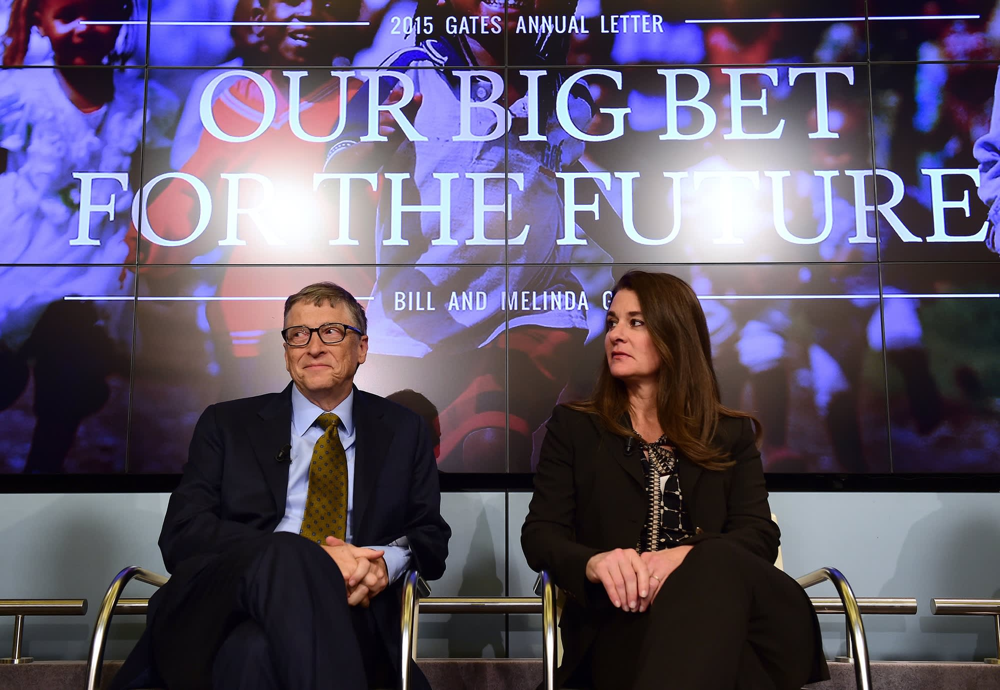
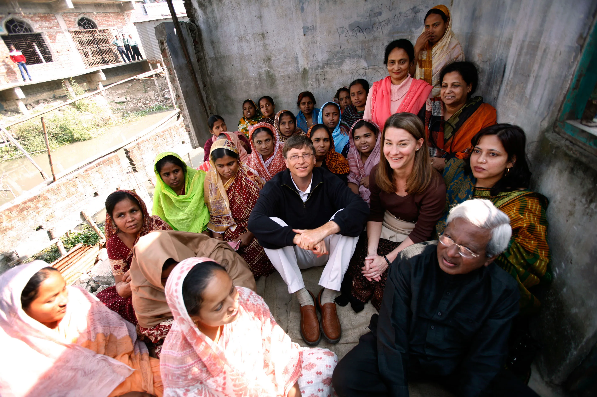
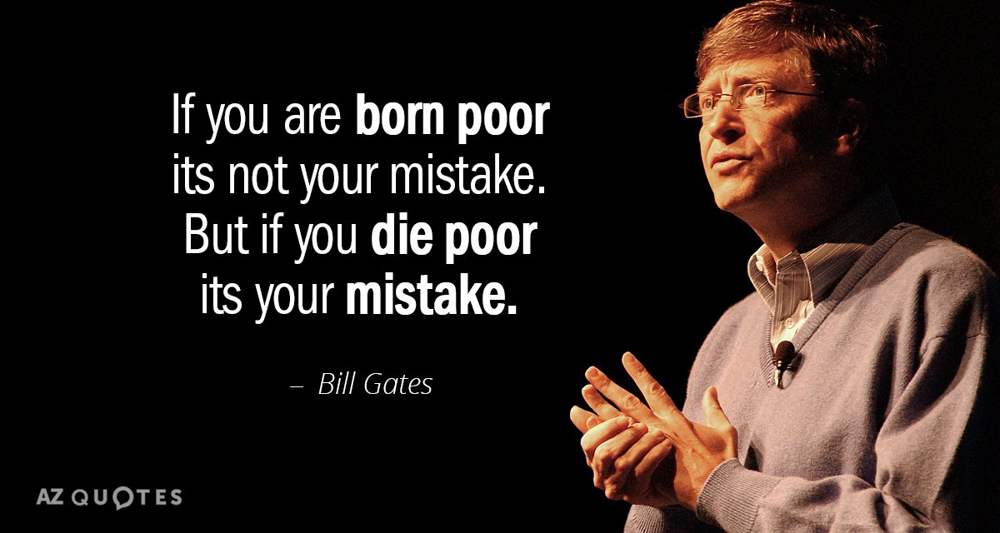
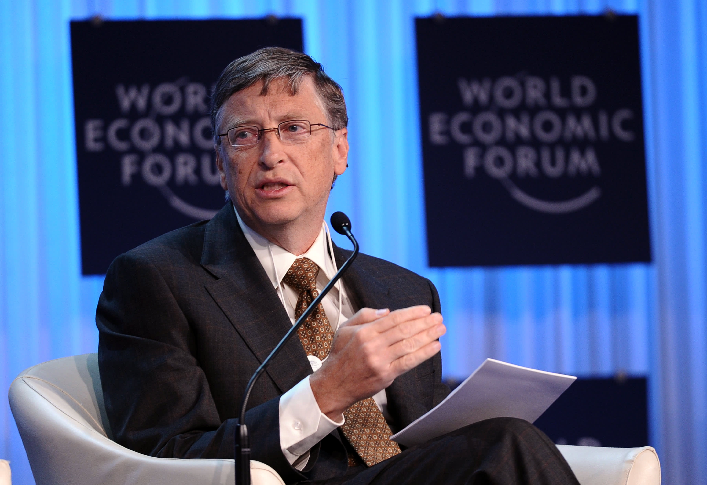

In 1975, Bill Gates, alongside Paul Allen, co-founded Microsoft, marking the genesis of a technological revolution. Their shared vision of making personal computers accessible to all laid the foundation for a company that would transform the computing landscape.
Gates and Allen's collaboration began with software development for the Altair 8800 microcomputer. Their breakthrough came in 1980 when they secured a deal with IBM to create an operating system, leading to the birth of MS-DOS. This pivotal moment propelled Microsoft's rise in the PC industry.
The true game-changer arrived in 1985 with the launch of Windows, a user-friendly graphical interface that made computing more intuitive. This innovation set new standards and positioned Microsoft as a leader in the operating system market. The subsequent release of Microsoft Office further solidified its impact, revolutionizing productivity.
Beyond software, Gates's foresight in embracing the internet led to Internet Explorer's creation, driving online communication and commerce. This emphasis on connectivity laid the groundwork for our modern digital age.
Gates's influence extended beyond technology. He leveraged Microsoft's success to establish the Bill & Melinda Gates Foundation, addressing global challenges like health and education. Microsoft's ongoing ventures into cloud computing and AI demonstrate their commitment to innovation.
In conclusion, Bill Gates's co-founding of Microsoft reshaped computing, business, and philanthropy. His visionary leadership, from creating user-friendly interfaces to anticipating industry trends, left an enduring legacy that continues to shape our world.
Founded by Bill and Melinda Gates in 2000, the Gates Foundation stands as a beacon of impactful philanthropy, reshaping how global challenges are addressed.
Recognizing the power of their success in technology, the Gateses turned their attention to pressing global issues. With a mission to enhance healthcare, reduce poverty, and expand education, their foundation embarked on a transformative journey.
The Gates Foundation's strategic approach combines financial resources, innovation, and collaboration. It has played a pivotal role in eradicating diseases like polio and malaria, demonstrating the tangible impact of focused philanthropy.
Education also stands at the forefront of the foundation's priorities. By investing in educational initiatives worldwide, the Gates Foundation aims to bridge gaps and provide equal opportunities for learning.
Furthermore, the foundation's commitment to innovation is evident in its support for research and development of vaccines and medical treatments, especially during public health crises.
Bill and Melinda Gates's leadership in philanthropy has spurred a new era of giving among the world's wealthiest individuals, encouraging them to contribute meaningfully to societal betterment.
In conclusion, the Bill & Melinda Gates Foundation's dedication to tackling global challenges with a strategic and innovative approach has redefined philanthropy. By leveraging their expertise and resources, the Gateses have set an inspiring example of how visionary leadership can lead to positive change on a global scale.


Bill Gates, renowned for his impact in the technology sector, has also emerged as a passionate advocate for education reform. His commitment to improving education systems globally underscores the transformative potential of quality learning.
Gates's interest in education stems from his belief that a strong foundation in learning is essential for individual growth and societal progress. Through the Bill & Melinda Gates Foundation, he has invested significantly in initiatives aimed at enhancing educational opportunities for all.
One of Gates's major contributions is his focus on research-backed, data-driven approaches to education reform. He believes that by harnessing data, educators can identify effective teaching methods, tailor curricula to individual needs, and make informed policy decisions.

Additionally, Gates has championed the importance of teachers. He recognizes their pivotal role in shaping students' lives and advocates for supporting and empowering educators through improved training, resources, and compensation.
Furthermore, Gates's dedication to technology integration in education highlights his forward-thinking approach. He believes that technology can personalize learning, making education more engaging and accessible. His initiatives range from providing schools with cutting-edge tools to fostering digital literacy skills.
Gates's influence extends beyond the United States; his foundation works with partners worldwide to improve educational systems in developing countries, focusing on girls' education and early childhood learning.
In conclusion, Bill Gates's advocacy for education underscores his commitment to empowering individuals and driving societal progress. His data-driven, teacher-centric, and technology-embracing approach sets an example for how innovative thinking can reshape education, ultimately creating a brighter future for generations to come.

Bill Gates, renowned for his technological innovations, has extended his visionary approach to tackle one of the most pressing challenges of our time: climate change. His commitment to finding effective solutions to this global crisis has sparked transformative initiatives and shed light on the intersection of technology and environmental sustainability.
Gates's involvement in addressing climate change is exemplified by the Breakthrough Energy Ventures fund, which he co-founded. This initiative aims to support and accelerate the development of innovative clean energy technologies that have the potential to significantly reduce carbon emissions.
Moreover, Gates has emphasized the importance of investing in research and development for breakthrough solutions. He advocates for increased funding in areas such as renewable energy, energy storage, and carbon capture technologies, recognizing that innovation is key to driving meaningful change.
Gates's book "How to Avoid a Climate Disaster" serves as a comprehensive guide to understanding the complexities of climate change and offers pragmatic strategies to achieve a net-zero carbon footprint. Through this work, he has fostered a broader understanding of the urgency and practicality of addressing climate change.
In addition, Gates recognizes the need for collective action and collaboration. He has engaged with governments, businesses, and organizations worldwide to amplify efforts in reducing greenhouse gas emissions and transitioning to sustainable energy sources.
Gates's influence in climate change extends beyond advocacy. The Breakthrough Energy Ventures fund, his book, and his partnerships collectively represent his dedication to catalyzing a global movement to combat climate change.
In conclusion, Bill Gates's commitment to addressing climate change demonstrates the power of applying technological innovation and strategic thinking to a critical global issue. His multifaceted approach, spanning investment, research, education, and collaboration, showcases how a visionary leader can inspire change on a global scale and shape a more sustainable future.
Beyond his role as a technology titan, Bill Gates has emerged as a thought leader and influential author, sharing insights on a wide array of subjects. His literary contributions, coupled with his unique perspective, have enriched discussions on technology, business, and global challenges.
Gates's thought leadership is exemplified by his annual letter, a tradition he started in 2009, where he shares his reflections on global issues, philanthropy, and technological advancements. These letters provide a window into his forward-thinking mindset and his dedication to addressing pressing global concerns.
In addition, Gates's literary endeavors extend to book authorship. His book "The Road Ahead," published in 1995, explored the impact of technology on society and outlined his predictions for the digital future. More recently, his book "How to Avoid a Climate Disaster" delved into the complexities of climate change and proposed practical solutions to mitigate its effects.
Gates's role as a thought leader extends to his role in shaping conversations on education reform, global health, and poverty alleviation. He uses his platform to advocate for evidence-based strategies and innovative thinking to tackle these challenges effectively.
Furthermore, Gates's blog, "GatesNotes," serves as an online platform where he shares book recommendations, insights, and commentary on various topics. This engagement fosters a broader dialogue and encourages critical thinking among his readers.
In conclusion, Bill Gates's role as an author and thought leader exemplifies his commitment to sharing knowledge, fostering discussion, and driving positive change. His letters, books, and online presence collectively highlight his multidimensional influence, sparking important conversations and inspiring individuals to think innovatively about the world's most pressing issues.